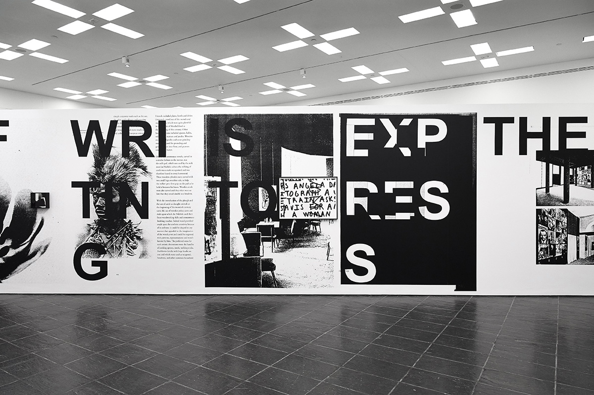
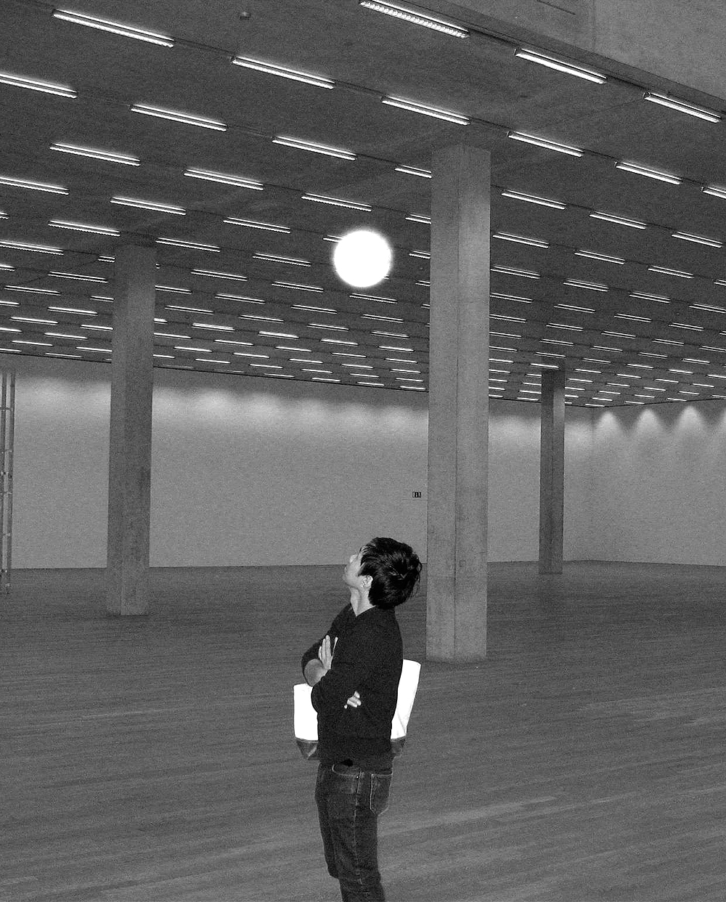
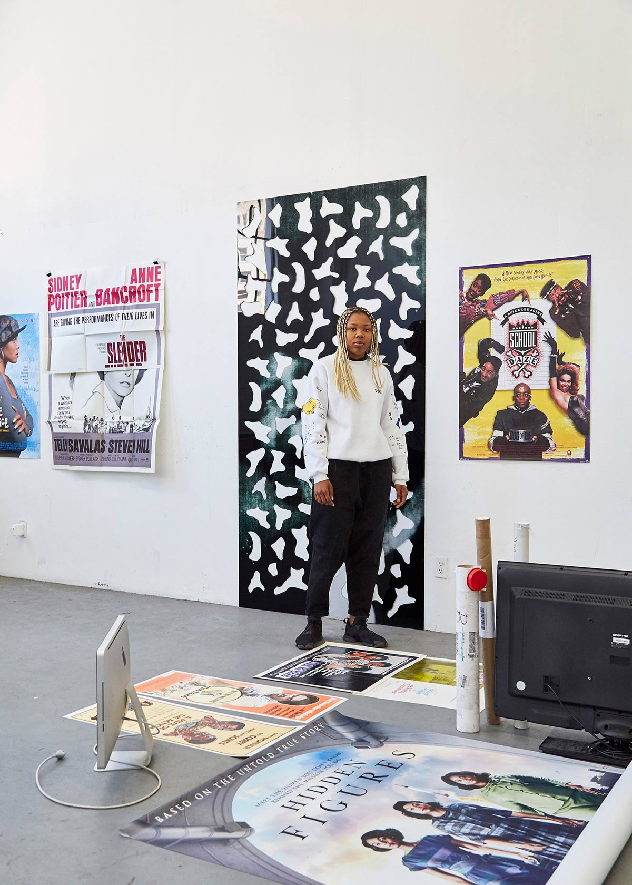
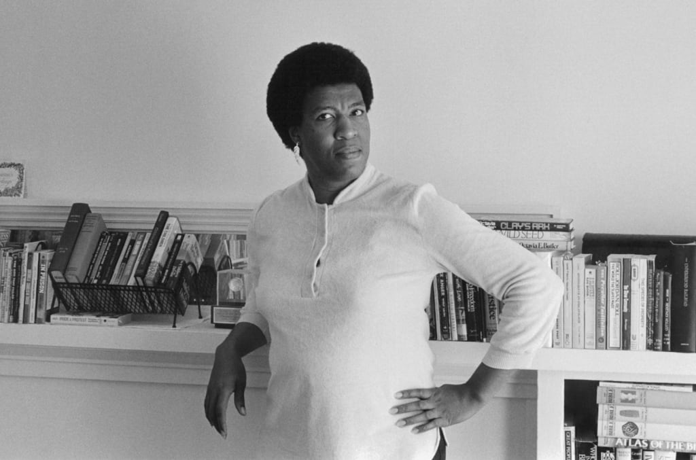
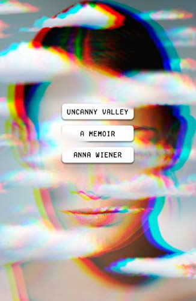
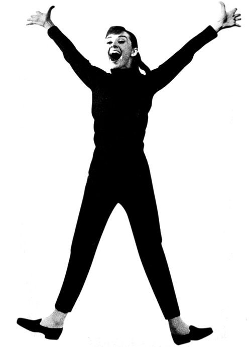

Readings
Each week there will be readings that will expand on the ideas discussed in the course. The readings are design writings taken from many vantage points and from varying moments of design and art history. These readings will broaden your scope and allow you to be open minded about concepts that you may be able to utilize in your own work. We will have a brief discussion as a class each week about what we have read.Presentations
Each week one student will be selected to give a brief presentation of a digital project that they have found that inspires them and to expose the class to something new. This digital project will showcase good design on the web and the student should be able to explain why this example represents good design in terms of functionality or visual interest. There will be a google slides template that you can use to fill in the information for your presentation. The student that is chosen that week will be at random and after you have presented once you should continue to create a new presentation of something that you’ve found to share with the class when you are called upon again to present.Are.na sketchbook
In order to keep your ideas organized we will utilize the website Are.na. This will be a sort of ‘digital sketchbook’ for what you come across in your research. As part of your grade you will be expected to have an Are.na channel with at least 20 blocks of inspiration / images / digital content that you’ve been gathering for the course and your projects, there is a chrome extension that might come in handy. You can also take notes directly in Are.na if you like. At the end of the course there will be an option to print a PDF or a book of your findingsInclusive Learning Statement
Your success in this class is important to me. We will all need accommodations because we all learn differently. If there are aspects of this course that prevent you from learning or exclude you, please let me know as soon as possible. Together we’ll develop strategies to meet both your needs and the requirements of the course. I encourage you to visit the Academic Development & Support Center to determine how you could improve your learning as well. If you need official accommodations, you have a right to have these met.Attendance Policy
For virtual meetings, class attendance is mandatory. Circumstances beyond your control will be evaluated on a case-by-case basis. It is your responsibility to catch up with class announcements, assignments, and materials on Blackboard. You may not receive credit for a course in which you fail to be present 80% of the time, as determined by the Attendance records. Students should not disrupt class by conducting any activities that interrupt.Course Usage of Blackboard Learn
Copies of the course syllabus and major assignments may be found on Blackboard Learn. You are responsible for regularly checking the online resources, which is accessed through the Georgian Court Blackboard Site. Additional support is found on the GCU Blackboard landing page.More Georgian Court Policies
Wednesday August 26th
— Presentation
— Reading discussion,

— Go over digital principles 101, digital mindset, interaction, basics of UX
— Work for the rest of class on gathering inspiration and adding to Are.na sketchbook
— Go over digital principles 102, responsive, grids, color systems, icons & basics of type


Week 6
Monday September 28th
— Wireframe review
— Workflow in Figma, working with symbols and type
— Headers, Body Copy, Type Styles, Color Styles
— Go over Material Design principles from Google
Wednesday September 30th
— Presentation
— Reading discussion,

and Digital Typography H&Co’s discover.typography

— Responsive Typography / Variable Fonts
— Type Pairing how to
— Go over What is a style tile?
Week 8
Monday October 12th
— Check in for Portfolio Site, with direction and Are.na sketchbook
— Quiz on Figma's Learn Design Pilot
— 1st draft of Portfolio site designed due in Figma
Wednesday October 14th
— Presentation
— Reading discussion,

— Go over mobile considerations for portfolio site
— Breakpoints
— Learn about Responsive Logos
Week 9
Monday October 19th
— Branding 101, Anatomy of a brand
— Personas
— Tone of Voice
— Examine Martine Syms’ ‘brand’
— Consider how to create your own ‘brand’ and how this could be applied to your portfolio
Wednesday October 21st
— Presentation
— Reading discussion, and

{kind=link}

{kind=link}
Week 10
Monday October 26th
— Introduction to Audio / Podcast project
— Listen to

— In addition listen or watch one episode of the following: Scenes from the Studio, This American Life, Junior Asprin Records, S-Town or Serial
— Work on concepting your Audio / Podcast project
Wednesday October 28th
— Presentation
— Discussion, watch
— Go over the basics of Adobe Audition for Audio Editing
Week 13
Monday November 16th
— Second draft of podcast project due, edits made, pacing pauses
— Check in 4rd Draft of your portfolio project due, Four pages in a CMS program
— Any technical issues can be discussed here
— Individual check in meetings
Wednesday November 18th
— Presentation
— Reading discussion,

— Continue to work on your podcast and portfolio projects
— Individual check in meetings
Week 14
Monday November 23rd
— Discussion, watch videos on
— Continue to work on your podcast and portfolio projects
— Individual check in meetings
Wednesday November 25th (Thanksgiving Holiday no class)
Week 15
Monday November 30th
— Last Check in for Portfolio Site
— Final draft of Portfolio site all pages completely coded into a CMS program
— Continue to work on your podcast and portfolio projects / Any technical issues should be resolved here
Wednesday December 2nd
— Podcast project due as final, uploaded to this dropbox assignments link as an MP3 so we can listen in class
END
